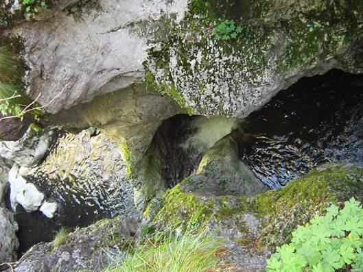
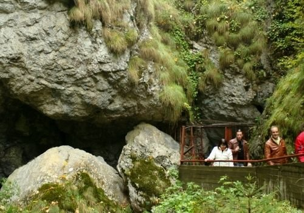
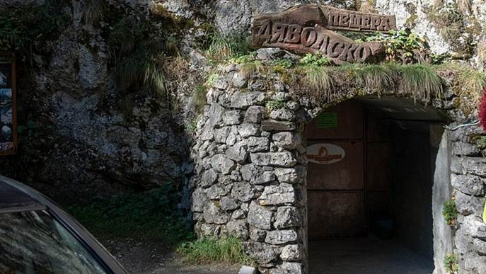
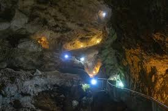

"Дяволското гърло", макар и да звучи малко страшничко, е една от най-интересните и необикновени пещери в България. Тя е част от величественото Триградско ждрело, което се намира се в Рило-Родопската област, на 1.5км от с. Триград и на 17км от Девин. Пещерата ще ви предложи великолепната гледка на най-високия подземен водопад на Балканите (42м). Както и ще ви потопи в изследване на тайнствените й галерии, които са свързани с легендата за слизането на Орфей в царството на Хадес, за да търси своята любима Евредика.
|
 |
|  |
Гръмкото име на пещерата идва от формата на входа й, който наподобява дяволска глава. Още с влизането си, ще усетите, че ви предстои да изживеете нещо грандиозно. Внушителната скална обител наподобява размерите на храм-паметника "Александър Невски" в София.
Пътят ви минава по изкуствена галерия, дълга 150м, която ще ви отведе в огромната Бучаща зала. Малко преди входа й, на едната стена ще видите изсечен в скалата образът на дяволска глава. Няколко стъпки по-напред и ще се озовете пред величествения подземен водопад, който ще ви спре дъха.
|
В залата ще видите и изсечена в скалата фигура на античен мъж в цял ръст.
Пътешествието ви продължава с вълнуващо изкачване по 301 обезопасени стъпала нагоре, покрай неповторимото природно зрелище. Това си е истинско адреналиново изживяване, което ще ви отведе до повърхността. Малко преди изхода ще видите изворче с издълбан миниатюрен олтар с фигура на Богородица.
|
 |
|  |
Интересно и необяснимо е как водите на подземния водопад се губят в сифон-галерия на 400м от входа на пещерата, за да изникнат отново в друга съседна пещера, наречена "Дирника на дявола". Тук пещерни клубове от цяла България организират експедиции с лодки срещу течението на подземната река. Звучи екстремно и забавно, нали?
Не пропускайте да изживеете приключението "Дяволското гърло"! Това е нещо, което не сте виждали досега!
|